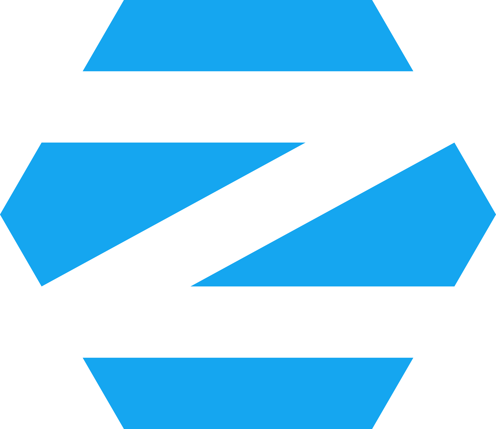

Base independente | interface GNOME (também tem edição KDE Plasma) | pacotes RPM, gerenciador dnf
Distro feita pela comunidade e patrocinada pela Red Hat. Lança uma versão nova mais ou menos a cada 6 meses e costuma trazer as tecnologias mais novas do Linux antes das outras. Também é a base de várias distros atômicas, como Bazzite, Aurora e Bluefin.
De todas as distros que já usei, o Fedora é a que eu sempre volto. Os pacotes chegam atualizados rápido, mas sem o risco de quebrar toda hora como no Arch. Comparado ao Debian, que segura as versões em nome da estabilidade, ele entrega coisa nova sem ficar para trás. Também vem mais limpo, sem um monte de programa que você não pediu, e é a base das distros atômicas que eu também uso.
Base independente | interface à escolha na instalação (GNOME, KDE Plasma, Xfce e outras) | pacotes .deb, gerenciador apt
Uma das distros mais antigas que ainda existem, criada em 1993 e mantida só pela comunidade, sem empresa por trás. Tem três ramos principais: stable (estável), testing (testes) e unstable. É a base de muitas outras distros, incluindo o Ubuntu e, por consequência, o Mint, o Pop!_OS e o Zorin.
O Debian segue a mesma ideia de um sistema limpo, mas com o foco total em estabilidade. É simples, claro e muito confiável. Só não uso como sistema principal porque, para ter pacotes mais novos, eu precisaria usar a versão testing, que pode ter problemas e travar a atualização de alguns pacotes. Mesmo assim, é uma das bases mais importantes do mundo Linux.
Base Ubuntu LTS | interface Cinnamon (também tem MATE e Xfce) | pacotes .deb, gerenciador apt
Criado em 2006 com o objetivo de ser fácil de usar. A interface Cinnamon foi feita pelo próprio time do Mint e lembra o jeito do Windows: menu no canto, barra embaixo. Vem com Flatpak na loja de aplicativos e não usa Snap por padrão.
É a distro que eu indicaria para quem está saindo do Windows. A interface é familiar e tem muitas facilidades para quem está começando. Como é baseado no Ubuntu LTS, o sistema é bem estável. O ponto fraco é que os pacotes demoram para atualizar, e por isso ele não fica à frente do Debian para mim.
Base Fedora Atomic (projeto Universal Blue) | interfaces: Bazzite KDE Plasma ou GNOME, Aurora KDE Plasma, Bluefin GNOME | programas por Flatpak e containers
As três fazem parte do projeto Universal Blue. O sistema é atualizado como uma imagem inteira e, se uma atualização der problema, dá para voltar para a versão anterior na hora de ligar o computador. O Bazzite é focado em jogos, já vem com a Steam e pode até funcionar no modo console, como o Steam Deck. O Aurora é a versão com KDE para uso geral, e o Bluefin, com GNOME, é voltado para desenvolvedores.
Essas três são distros atômicas: a base do sistema não muda, então é muito mais difícil quebrar alguma coisa. Os programas rodam em containers, ambientes isolados que não mexem no sistema. O Bazzite já vem pronto para jogar; o Aurora, que uso hoje, traz o KDE; e o Bluefin usa o GNOME, por isso não é o meu favorito. Gosto muito da proposta, mas para quem quer mexer em tudo a adaptação pode ser difícil, e eu ainda prefiro a liberdade do Fedora tradicional.
Base Ubuntu | interface COSMIC | pacotes .deb (apt) e Flatpak
Feito pela System76, uma empresa americana que vende computadores com Linux. A interface COSMIC foi criada pela própria System76, escrita na linguagem Rust, e tem tiling embutido (as janelas se organizam sozinhas lado a lado). Tem uma versão pronta para placas de vídeo NVIDIA.
Foi a minha primeira distro, e para mim ela é uma versão melhorada do Ubuntu, já vem com muita coisa pronta. O sistema de tiling sempre foi muito bom e usável. Hoje ele usa a interface nova COSMIC, que eu ainda acho muito no começo. Se a COSMIC amadurecer, eu voltaria a usar, mas por enquanto ela não sobe no ranking.
Base Ubuntu LTS | interface GNOME modificado | pacotes .deb (apt), Flatpak e Snap

Feito pela Zorin Group, uma empresa da Irlanda, pensado para quem vem do Windows ou do macOS. Dá para mudar o visual para imitar o layout desses sistemas. Tem uma versão gratuita (Core) e uma paga (Pro), com mais layouts e programas.
Tem a mesma proposta do Linux Mint: ser fácil para quem vem do Windows. Mas eu prefiro o Mint, principalmente porque o Zorin usa o GNOME, interface que hoje não é a minha favorita. Para mim, ele acaba sendo uma versão inferior do Mint.
Base independente | interface KDE Plasma ou GNOME | pacotes RPM, gerenciador zypper
Comunidade patrocinada pela SUSE, empresa alemã. Tem duas versões principais: Tumbleweed (rolling release, sempre atualizada) e Leap (versões fixas e estáveis). Usa o sistema de arquivos Btrfs com snapshots, que são "fotos" do sistema para voltar atrás se algo der errado.
O openSUSE é bem diferente das outras distros da lista. Usei poucas vezes e, nelas, tive dificuldade para instalar alguns programas que uso, como o Waydroid (que roda Android dentro do Linux) e a Steam, que precisei baixar por fora. Não foi algo que me fez ficar, mas ele entra no TOP 10 por ser uma alternativa diferente e respeitada.
Base Arch Linux | interface à escolha (KDE Plasma é a mais comum) | gerenciador pacman
Distro baseada no Arch e focada em desempenho: os pacotes são compilados com otimizações para processadores mais novos e o kernel (o núcleo do sistema) tem ajustes próprios. É rolling release e tem instalador gráfico, o que deixa o mundo Arch bem mais fácil de começar.
O CachyOS é baseado no Arch Linux e foi por ele que eu experimentei esse mundo. Minha experiência foi tranquila, mas o Arch atualiza tudo muito rápido, e isso aumenta a chance de algo quebrar de uma hora para outra. É aí que o Fedora ganha para mim: pacotes novos, mas com mais segurança.
Base Ubuntu | interface KDE Plasma | pacotes .deb (apt) e Snap
Sabor oficial do Ubuntu com a interface KDE Plasma. Usa os mesmos repositórios e o mesmo calendário do Ubuntu: versão nova a cada 6 meses e uma LTS a cada 2 anos.
É o Ubuntu com a interface KDE, que é a minha preferida. Ele ainda tem os snaps, mas mesmo assim eu prefiro o Kubuntu ao Ubuntu. Tirando os snaps, achei o uso dele mais estável.
Base Debian | interface GNOME (com ajustes da Canonical) | pacotes .deb (apt) e Snap
Criado em 2004 pela Canonical, empresa do Reino Unido, e uma das distros mais usadas do mundo, em computadores pessoais e principalmente em servidores. Lança versão nova a cada 6 meses, e a cada 2 anos sai uma LTS com 5 anos de suporte.
O Ubuntu é uma das distros mais conhecidas, mas fica em último para mim. O principal motivo são os snaps, o formato de pacote da Canonical, que eu não gosto de ser obrigado a usar. Também não curto algumas decisões que a empresa vem tomando, e ele muda cada vez mais nesse sentido.